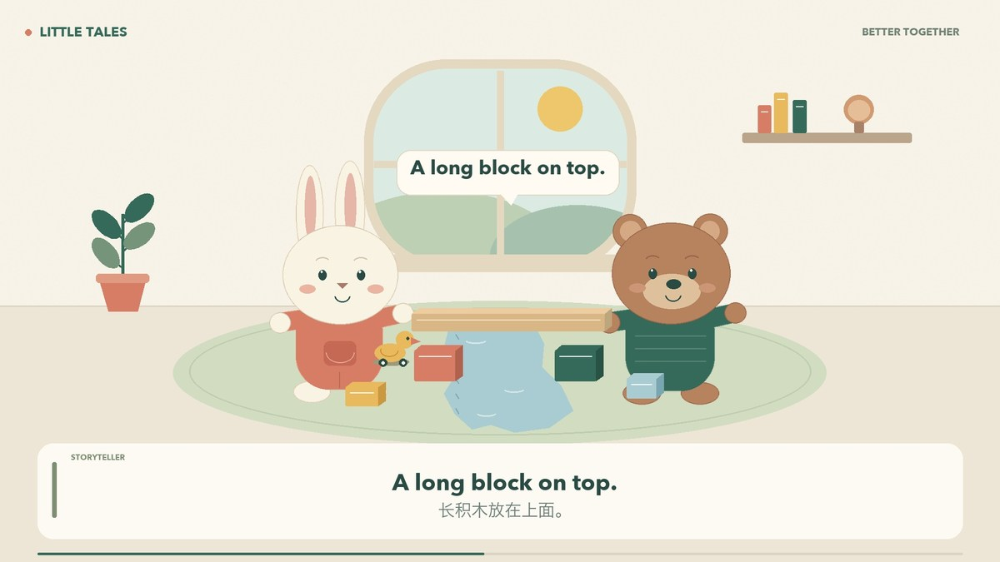

开口求助
Can you help me?
你能帮帮我吗？
皮普想给玩具鸭搭一座桥，积木却总是倒下。朋友波波走来，他试着开口求助。两个朋友一起扶稳积木，终于让小鸭顺利过桥。
故事让“求助”发生在具体的游戏情境里。孩子先理解角色的需要，再听见可以模仿的英文表达。
遇到困难时愿意表达需要，也能友善地回应朋友。

情境中听见，留白时开口，再带进自己的游戏。
你能帮帮我吗？
我们一起试试。
我们成功啦！
确定年龄与语言目标，用“尝试、求助、合作、完成”组织情节，保留角色的主动性。
以简短、自然的英文对话推动故事；中文字幕传递情境含义，重点句型单独呈现。
神经 TTS 生成三角色配音，配合原创二维图形动画、合成配乐和柔和音效。
检查表达、角色和字幕的一致性，保留跟读时间，统一响度并检查视频文件。
制作说明：本作品采用 AI 辅助脚本与双语适配、合成配音及程序化动画。适龄与互动效果为设计目标。
00:00 旁白
Pip and the Little Bridge.
皮普和小桥
00:03 旁白
This is Pip. Today, he is building a bridge.
这是皮普。今天，他要搭一座小桥。
00:08 旁白
A bridge for his little toy duck.
这座桥，是为他的小玩具鸭搭的。
00:11 Pip / 皮普
Ready, Ducky? Let's go!
准备好了吗，小鸭？出发！
00:15 旁白
One block. Two blocks.
一块积木。两块积木。
00:19 旁白
Wobble, wobble... crash!
晃呀，晃呀……哗啦！
00:22 Pip / 皮普
Oh no! My bridge!
哎呀！我的小桥！
00:25 旁白
Pip tries again. But the blocks fall down.
皮普又试了一次，可积木还是倒了。
00:30 Pip / 皮普
I can't do it.
我搭不好。
00:33 旁白
His friend Bo comes over.
他的朋友波波走了过来。
00:35 Bo / 波波
Do you need some help?
你需要帮忙吗？
00:37 Pip / 皮普
Yes, please. Can you help me?
需要，谢谢！你能帮帮我吗？
00:42 旁白
Your turn! Say: Can you help me?
轮到你啦！说一说：你能帮帮我吗？
跟读留白 3.2 秒
00:49 Bo / 波波
Of course! Let's try together.
当然！我们一起试试。
00:53 旁白
Big blocks at the bottom.
大积木放在下面。
00:56 旁白
A long block on top.
长积木放在上面。
00:58 Pip / 皮普
You hold this side. I'll hold that side.
你扶这边，我扶那边。
01:03 Bo / 波波
Ready? One, two, three!
准备好了吗？一、二、三！
01:08 旁白
The bridge is ready. Pip gives it a gentle tap.
小桥搭好了。皮普轻轻碰了碰。
01:13 Pip / 皮普
It's not wobbly!
它不晃啦！
01:16 旁白
Now, the little duck can cross.
现在，小鸭可以过桥啦。
01:19 旁白
Roll, roll, roll... all the way across!
滚呀，滚呀……顺利到对岸！
01:23 Pip / 皮普
We did it!
我们成功啦！
01:24 Bo / 波波
We did it together!
这是我们一起做到的！
01:27 旁白
Pip smiles. Asking for help was a good idea.
皮普笑了。原来，开口求助是个好办法。
01:32 Pip / 皮普
Thank you, Bo.
谢谢你，波波。
01:34 Bo / 波波
You're welcome, Pip.
不客气，皮普。
01:36 旁白
Now you try! Let's try together.
现在你来试试！我们一起试试。
跟读留白 3.2 秒
01:43 旁白
One more! We did it!
再说一句！我们成功啦！
跟读留白 2.8 秒
01:49 旁白
What will you build with a friend?
你想和朋友一起搭什么呢？
01:54 旁白
A little bridge. A big team.
小小的桥，大大的合作。